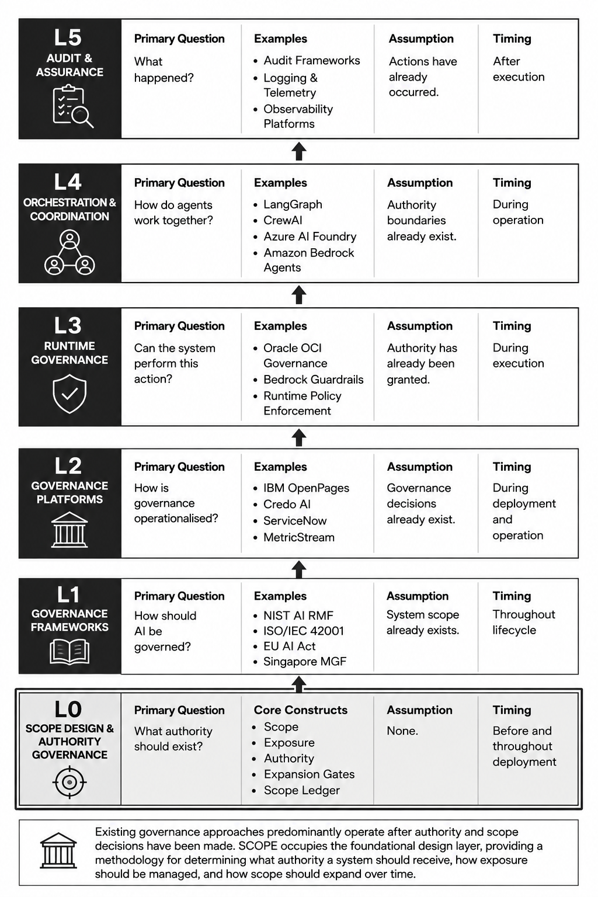

APPENDIX A — COMPETITIVE POSITIONING
The Emerging AI Governance Stack
As AI systems become increasingly embedded in organisational workflows, a governance ecosystem is emerging around them. Different frameworks, platforms, and technical controls address different stages of the AI lifecycle.
Viewed collectively, these approaches form a layered governance stack:
| Layer | Purpose | Representative Examples |
|---|---|---|
| L5 | Audit & Assurance | Logging, observability platforms, audit frameworks |
| L4 | Multi-Agent Orchestration | LangGraph, CrewAI, Azure AI Foundry, Amazon Bedrock Agents |
| L3 | Runtime Governance | Oracle OCI Governance, Bedrock Guardrails, runtime policy enforcement |
| L2 | Governance Platforms | IBM OpenPages, Credo AI, ServiceNow, MetricStream |
| L1 | Governance Frameworks & Standards | NIST AI RMF, ISO/IEC 42001, EU AI Act, Singapore Model AI Governance Framework |
| L0 | Scope Design & Authority Governance | SCOPE |
Each layer addresses a different governance concern. Together they form a complementary ecosystem rather than competing approaches.

Across the governance ecosystem, a common assumption appears repeatedly:
Someone has already decided what the system should be allowed to do.
Existing governance approaches provide extensive guidance on how to govern, monitor, audit, orchestrate, and control AI systems.
Far fewer address the design decisions that precede deployment:
- Where should the system operate?
- What information should it access?
- What decisions should it influence?
- What actions should it execute?
- How should its authority expand over time?
- What evidence should be required before additional authority is granted?
Yet these decisions largely determine both the value the system can create and the exposure it introduces.
The Role of SCOPE
SCOPE occupies the pre-deployment design layer of the governance stack.
Rather than focusing on how a system should be governed after deployment, SCOPE focuses on how its authority should be designed before deployment and how that authority should evolve as trust is earned.
The framework introduces a structured methodology for:
- defining initial scope
- assessing exposure
- staging authority
- governing scope expansion
- making scope accumulation visible through the Scope Ledger
- aligning authority growth with evidence and performance
In this sense, SCOPE complements rather than replaces existing governance approaches.
| Governance Question | Existing Governance Ecosystem | SCOPE |
|---|---|---|
| How should AI be governed? | Strong coverage | Complementary |
| How should AI be monitored? | Strong coverage | Minimal |
| How should AI be audited? | Strong coverage | Minimal |
| How should AI behave at runtime? | Emerging coverage | Complementary |
| How should authority be allocated? | Limited coverage | Primary focus |
| How should authority expand over time? | Limited coverage | Primary focus |
| How should scope accumulation be made visible? | Limited coverage | Primary focus |
| How should exposure and authority remain aligned? | Limited coverage | Primary focus |
SCOPE therefore occupies a distinct position within the emerging AI governance landscape. Rather than governing systems after scope has been defined, it provides a methodology for designing scope itself.
Its focus is not governance after deployment, but the deliberate design of authority progression before and throughout deployment.
Commercial Governance & AI Procurement Standards
Existing AI procurement guidance (EU Model Contractual Clauses, GSA GSAR clauses) addresses data rights, performance SLAs, liability, and audit. None address scope progression as a jointly governed variable with pricing implications.
SCOPE extends procurement governance by making scope expansion a contractual event, not just an operational one. The Scope Ledger as a contract annex creates economic consequences for scope decisions — a mechanism absent from current procurement frameworks.